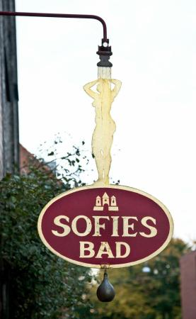

Brusebadeanstalten i Sofiegade (1909) er oprindeligt bygget med 14 brusekabiner for mænd og 6 brusekabiner for kvinder.
I forhold til brusebadeanstalten i Saxogade, var Sofiegades bad mere rummeligt. Brusebadeanstalten havde udover 20 brusekabiner også to kabiner med badekar.
I julen 1997 blev Sofiegades Bad lukket. Hurtigt opstod et ønske blandt christianshavnerne om at genåbne det smukke hus.
Efter ansøgningen fra den nedsatte Badehusgruppe fredet i januar 2000 på grund af sit enestående interiør.
Foreningen Sofiebadet blev grundlagt og fik varig lejekontrakt med Københavns Ejendomme.
I dag indebærer Sofiebadet: badning, bevægelse, workshops, koncerter, udstillinger og i 2010 fik Sofiebadet et nyrenoveret badehus med Tyrkisk hamam i den gamle varmecentral.
Badeanstalten her i Sofiegades er det eneste, som er bevarede ud af de tre badeanstalter på Sofiegade, Saxogade og Helsingørgade.
